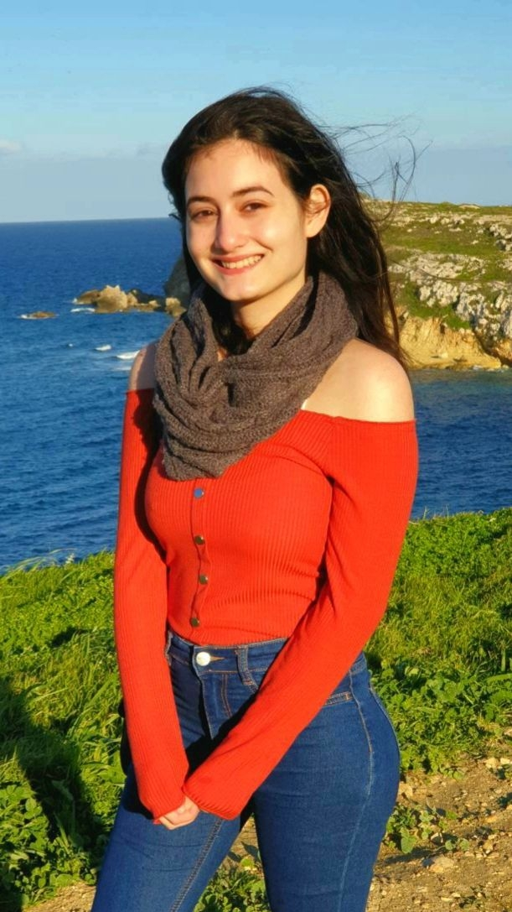

I am a second-year student at the MCAST pursuing an Advanced Diploma in Digital Design. Through this program, I have gained a strong foundation in interactive media, as well as essential principles of graphic design and game art. My skills encompass a range of areas including HTML, CSS, wireframing, style guiding, user research, Adobe Photoshop, Illustrator, and Figma.
My interest in the interactive media stream stems from my enjoyment of organization and decoration, and I find it particularly rewarding to see visual concepts materialize into projects that meet clients' requirements.
Outside of my studies, I engage in various hobbies, including exercise, crafts, true crime documentaries, and learning European history. I recognize the value of diverse perspectives and techniques and am committed to continuous growth and improvement.
To learn more about me and my capabilities, please take a moment to review my projects, which are accessible in the tab above.

A little progress each day adds up to big results. ~ Satya Nani